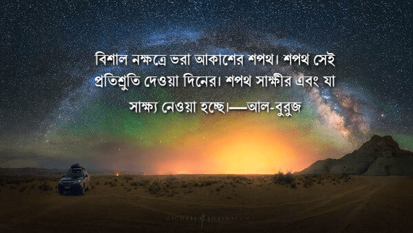
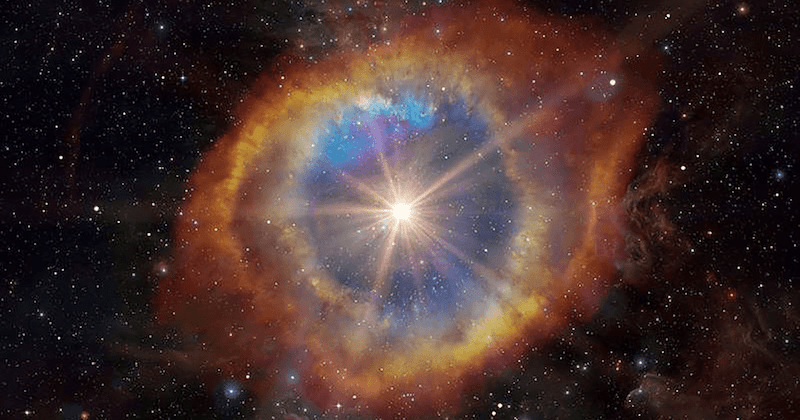
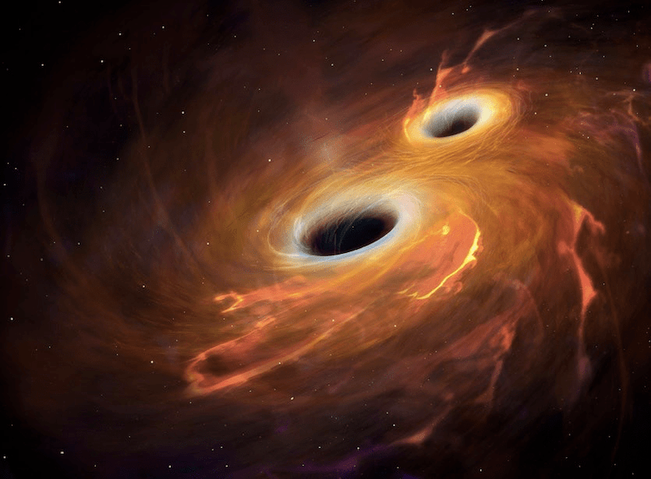
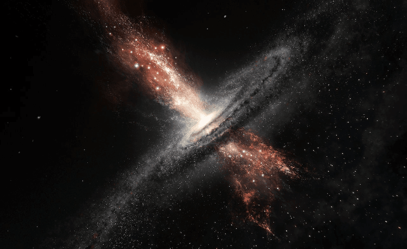
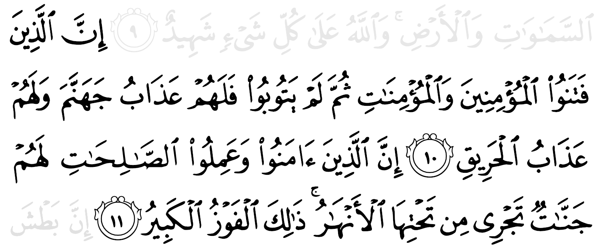
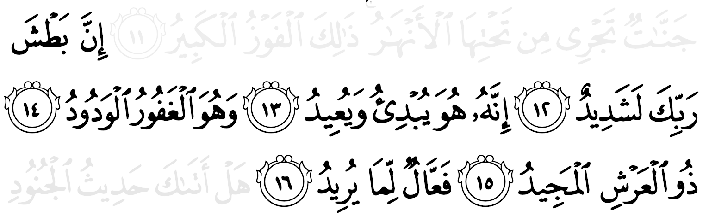

বিশাল নক্ষত্রে ভরা আকাশের শপথ। শপথ সেই প্���তিশ্রুতি দেওয়া দিনের। শপথ সাক্ষীর এবং যা সাক্ষ্য নেওয়া হচ্ছে। — আল-বুরুজ ১-৩

চিত্র: মরুভূমির রাতের পরিষ্কার আকাশে আমাদের ছায়াপথ
বুরুজ শব্দটির অর্থ দুর্গ, উঁচু দালান, প্রাসাদ, বড় নক্ষত্র ইত্যাদি।[৫] কুরআনে আল্লাহ تعالى আরও বলেন, “আমি আকাশে নক্ষত্র বীথি বসিয়েছি, সবার দেখার জন্য আকর্ষণীয় করেছি।”— ১৫:১৬। “সুউচ্চ মর্যাদাবান তিনি, যিনি আকাশে নক্ষত্রবীথি দিয়েছেন, দিয়েছেন একটি জ্বলন্ত সূর্য এবং উজ্জ্বল চাঁদ।”—২৫:৬১। মহাকাশে বিশাল সব সৃষ্টি তিনি تعالى তৈরি করে রেখেছেন, যাদের বিশালত্ব আমাদের কল্পনার সীমার বাইরে। আমাদের সূর্য এত বড় যে, এর ভেতরে তের লক্ষ পৃথিবী ঢুকিয়ে দেওয়া যাবে। আর সূর্য তেমন কোনো বড় নক্ষত্রও নয়। এমন সব দানবাকৃতির নক্ষত্র মহাবিশ্বে ছড়িয়ে আছে, যাদের ভেতরে দশ কোটি সূর্য এঁটে যাবে। এখন পর্যন্ত জানা সবচেয়ে বড় নক্ষত্রটি পঞ্চাশ কোটি সূর্যের সমান।[৪৩৮]
নক্ষত্রই একমাত্র বড় সৃষ্টি নয়। মহাবিশ্বের আরও বিশাল সৃষ্টি আছে যেগুলোর আকৃতি আমাদের চিন্তার সীমা পেরিয়ে যায়। কয়েকশ কোটি নক্ষত্র, গ্রহ, লক্ষ নীহারিকা, লক্ষ কৃষ্ণগহ্বর সহ আরও অনেক অজানা সৃষ্টি নিয়ে বিশালাকার এক একটি গ্যালাক্সি তৈরি হয়। এই বিশালাকার গ্যালাক্সি মহাবিশ্বে একটি-দুটি নয়, কয়েকশ কোটি পাওয়া গেছে, যেগুলোর প্রত্যেকটির ভেতরেই বিশাল সব জগত রয়েছে।
এখানে লক্ষ্য করার ব্যাপার হলো: বুরুজ শব্দটির মূল অর্থ দুর্গ, প্রাসাদ, ঘাঁটি। আমরা রাতের আকাশে তাকিয়ে যে অনন্ত নক্ষত্রবীথি দেখতে পাই, সেগুলো যেন অসংখ্য দুর্গ। কারা যেন সেখান থেকে আমাদেরকে পাহাড়া দিচ্ছে। আল্লাহর تعالى নির্দেশ পেলেই তারা আমাদের উপর ঝাঁপিয়ে পড়বে। যে কোনো মুহূর্তে পৃথিবী রণক্ষেত্রে পরিণত হতে পারে। মহাজাগতিক আক্রমণে মানবজাতি নিশ্চিহ্ন হয়ে যাওয়া শুধুই সময়ের ব্যাপার। আল্লাহ تعالى সেই ভীষণ দিনের প্রতিশ্রুতি দিয়ে রেখেছেন। শীঘ্রই সেটা ঘটতে যাচ্ছে। মানবজাতিকে তিনি تعالى এই ব্যাপারে বহুবার হুশিয়ার করেছেন।
আমরা যদি মহাবিশ্বের দিকে তাকাই, তাহলে আসলেই একটা রণক্ষেত্র দেখতে পাবো। প্রতিদিন বিশালাকৃতির নক্ষত্রগুলো ভীষণ বিস্ফোরণে চৌচির হয়ে আশেপাশের হাজার হাজার গ্রহ ধূলিসাৎ করে দিচ্ছে, অন্যান্য নক্ষত্রকে ভেঙ্গে ফেলছে। অনেক সময় কিছু নক্ষত্র থেকে এমন ভীষণ রেডিয়েশন তীরের মতো ছুটে আসে যে, তার সামনে যা-ই পরে, তা-ই পুড়ে ছাই হয়ে যায়।

চিত্র: একটি বিস্ফোরিত নক্ষত্র
মহাকাশে কোটি কোটি কৃষ্ণগহ্বর রয়েছে, যেগুলোর আকর্ষণ বলয়ের মধ্যে কিছু পড়লে তা আর ফিরে আসে না, চিরদিনের জন্য ভেতরে পরে হারিয়ে যায়। কৃষ্ণগহ্বর প্রতি নিয়ত আস্ত গ্রহ, নক্ষত্র গিলে খেয়ে ফেলছে। শুধু তাই না, এরা এতই ভয়ংকর যে, এরা একে অন্যকেও খেয়ে ফেলে আরও বড় হয়ে যায়।

চিত্র: কৃষ্ণগহ্বর (কাল্পনিক চিত্র)
বেশিরভাগ গ্যালাক্সির কেন্দ্রে রয়েছে এক প্রকাণ্ড কৃষ্ণগহ্বর। এগুলো তার চারপাশ থেকে প্রতি নিয়ত বিপুল পরিমাণের পদার্থ খেয়ে ফেলছে। তারপর একসময় এগুলো থেকে প্রচণ্ড বেগে এমন তীব্র বিচ্ছুরণ বেরিয়ে আসে যে, তার উজ্জ্বলতা মহাবিশ্বের সবকিছুর উজ্জ্বলতাকে ম্লান করে মহাবিশ্বের অন্য প্রান্ত থেকেও তা দেখা যায়। এই তীব্র বিচ্ছুরণের পথে যা পড়ে, তা-ই ধ্বংস হয়ে যায়। পদার্থ বিজ্ঞানের যাবতীয় সূত্র ভেঙ্গে এগুলো ১০ লক্ষ-কোটি ডিগ্রি তাপমাত্রার রেডিয়েশন মহাশূন্যে ছুড়ে দেয়। [৪৩৯]

চিত্র: গ্যালাক্সির কেন্দ্রের কৃষ্ণ গহ্বর থেকে বিচ্ছুরণ (কাল্পনিক চিত্র)
মঙ্গল এবং বৃহস্পতি গ্রহের মাঝামাঝি কক্ষপথে ১১ থেকে ১৯ লক্ষ গ্রহাণু ঘুরে বেড়াচ্ছে। এগুলো মাঝে মধ্যেই একটা আরেকটার সাথে বাড়ি খেয়ে কক্ষচ্যুত হয়ে পৃথিবীর দিকে ভীষণ বেগে ধেয়ে আসে। প্রতি বছর প্রায় একশটি গ্রহাণু পৃথিবীর পাশ দিয়ে উড়ে যায়। এগুলোর একটাও যদি পৃথিবীতে আছড়ে পড়ে, তাহলে পারমানবিক বোমার সমান বিস্ফোরণ হবে। ২০১৮ সালে এমন এক বিরাট গ্রহাণু পৃথিবীর পাশ দিয়ে চলে গিয়েছিল, যা পৃথিবীতে পড়লে ১৮৫টি হিরোশিমা এটোম বোমার সমান বিস্ফোরণ ঘটতো। [৪৪০]
চিত্র: গ্রহাণুর পৃথিবীর দিকে ধেয়ে আসা (কাল্পনিক চিত্র)
আমরা কোনমতে বেঁচে আছি। মহাবিশ্বের হাজারো বিপদ থেকে বহু পরিকল্পনা করে আল্লাহ تعالى পৃথিবীকে রক্ষা করেছেন দেখেই এখনো পর্যন্ত আমরা টিকে আছি। পৃথিবীর ধ্বংস হয়ে যাওয়াটা কোনো অবাস্তব ঘটনা নয়, বরং পৃথিবীতে এতদিন প্রাণ টিকে থাকাটাই হচ্ছে বিস্ময়কর ব্যাপার।
অভিশপ্ত হয়েছিল সেই মানুষগুলো যারা গর্ত খুঁড়েছিল, যেখানে দাউ দাউ করে আগুন জ্বলছিল এবং ওরা বসে বসে দেখছিল বিশ্বাসীদের সাথে কী করা হচ্ছিল। ওরা বিশ্বাসীদেরকে নির্যাতন করেছিল শুধুমাত্র এই কারণে যে, তারা সেই মহাপরাক্রমশালী, প্রশংসিত আল্লাহর প্রতি বিশ্বাসে অটল ছিল, যিনি আকাশ এবং পৃথিবীর অধিপতি। আল্লাহ সবকিছুরই সাক্ষী। —আল-বুরুজ ৪-৯
কী প্রচণ্ড ঈমানী শক্তি সেই বিশ্বাসীদের! চোখের সামনে দাউ দাউ করা আগুনের গর্ত দেখেও তারা তাদের ঈমান বিসর্জন দেয়নি। দুনিয়ার কোনো মায়া, কোনো কষ্ট তাদেরকে টলাতে পারেনি। ভীষণ আগুনে পুড়ে অসহ্য যন্ত্রণায় মারা গেছে তারা, কিন্তু আল্লাহর تعالى প্রতি বিশ্বাসে আপোষ করেনি।
তারা যদি তাদের জীবন বাঁচানোর জন্য একটু মিথ্যা কথা বলত, তাতে কিছুই হতো না। আল্লাহ تعالى ঠিকই তাদের অন্তরের বিশ্বাস জানতেন এবং সেজন্য পুরস্কার দিতেন। কিন্তু তারপরেও সেই বিশ্বাসীরা শত কষ্ট সহ্য করে নিজেদের জীবন দিয়ে গেছেন শুধু মাত্র এই কারণে যে, তারা অন্যায়কে প্রশ্রয় দেবেন না, মিথ্যাকে কিছুক্ষণের জন্য হলেও জিততে দেবেন না —যা কিনা আমরা প্রতিনিয়ত করে যাই। প্রতিনিয়ত আমরা নিজেদের সাথে আপোষ করে অন্যায়কে প্রশ্রয় দেই, মিথ্যাকে সত্যের উপর জিতে যাওয়ার সুযোগ করে দেই। আল্লাহর تعالى প্রতি বিশ্বাস আমাদের ঠিকই আছে, জান্নাতের পুরস্কারের লোভও আছে। কিন্তু কোনটাই এতটা দৃঢ় নয় যে, আমরা অন্যায়ের সামনে মাথা উঁচু করে প্রতিবাদ জানাবো, প্রয়োজনে নিজের জীবন বিসর্জন দেব। আমরা সুবিধাবাদী —জান্নাত চাই, একই সাথে দুনিয়াতে কোনো ঝামেলা চাই না।
আমরা চোখের সামনে দেখতে পাই, একাউন্টেন্টের খাস কলিগরা বেশি বিল করে কোম্পানির টাকা মেরে দিচ্ছে, কিন্তু আমরা একাউন্টেন্টকে ধরিয়ে দেই না, পাছে নিজের বেতন নিয়ে ঝামেলা হয়। মারুক না কোম্পানির টাকা, আমার নিজের টাকা তো আর মারছে না?
আত্মীয়ের বিয়ের দাওয়াতে সম্পূর্ণ ইসলাম বিরোধী কাজ হচ্ছে জেনেও আমরা সামাজিকতার ভয়ে ধর্মীয় আইন বিসর্জন দিয়ে সুড়সুড় করে চলে যাই। হাসিমুখে সবার সাথে গীবত করি। তাদের অন্যায় আবদার মেনে নেই। মনে করি, “থাক না, এদেরকে কিছু বলে লাভ নেই। মাঝখান থেকে আমার সাথে বনিবনা নষ্ট হয়ে যাবে। এই আত্মীয়রা কতো বিপদে কাজে আসবে। একবার একটু অন্যায় মেনে নিলে কীই আর ক্ষতি হবে?”
—আল্লাহ تعالى আমাদেরকে ওই আয়াতগুলোতে বিশ্বাসীদের স্ট্যান্ডার্ড কোথায় থাকা উচিত, তা দেখিয়ে দিয়েছেন। আফসোস যে, আমরা অনেকেই সেই স্ট্যান্ডার্ডের ধারে কাছেও যেতে পারিনি।

যারা বিশ্বাসী পুরুষ এবং নারীদের উপর নির্যাতন করে, কিন্তু তারপরে তাওবাহ করে না, তাদের জন্য অবশ্যই জাহান্নামের শাস্তি রয়েছে, আর রয়েছে জ্বলন্ত আগুনে দগ্ধ হওয়ার ভীষণ যন্ত্রণা। আর যারা বিশ্বাস করে এবং কল্যাণকর কাজ করে, তাদের জন্য অবশ্যই রয়েছে জান্নাত, যার ভেতরে পানির ধারা বয়ে যায়— সেটাই মহা সাফল্য। আল-বুরুজ ১০-১১
যারা আল্লাহর تعالى বান্দাদের আগুনে দগ্ধ করে তামাশা দেখছিল, তাদের জন্যও তিনি তাওবাহ’র দরজা খোলা রেখেছিলেন! আর মানুষ কিনা বলে— আল্লাহ تعالى বেশি কঠিন, তিনি মানুষকে কথায় কথায় শাস্তি দেন, ইসলাম বড়ই কঠিন, কিছু হলেই জাহান্নামে পুড়তে হবে ইত্যাদি। মানুষকে হত্যার মতো বড় অপরাধ, তার উপরে বিশ্বাসী বান্দাদের পুড়িয়ে মারার মতো জঘন্য অপরাধকেও আল্লাহ تعالى তাওবাহ’র বিনিময়ে ক্ষমা করার সুযোগ করে দিয়েছিলেন! কী পর্যায়ের ক্ষমাশীল, করুণাময় তিনি!
কিন্তু যারা তাওবাহ করবে না, তাদের জন্য আছে জাহান্নামের শাস্তি। তাদের জন্য বিশেষ করে থাকবে প্রজ্বলিত আগুনে দগ্ধ হওয়ার শাস্তি। এরা মনে করেছিল মানুষকে আগুনে পুড়িয়ে প্রচণ্ড কষ্ট দেবে? মানুষের বানানো আগুনের থেকে মহাবিশ্বের সৃষ্টিকর্তার বানানো আগুনে দগ্ধ হওয়ার যন্ত্রণা কী ভীষণ পর্যায়ের হতে পারে, সেটা মানুষ কল্পনাও করতে পারবে না।
যারা বিশ্বাস করে এবং কল্যাণকর কাজ করে
‘আমাল সালিহ’ অর্থ হচ্ছে সৎকাজ, সংস্কার, ভুল কিছুকে ঠিক করা, ভাঙ্গা জিনিস জোড়া লাগানো, শান্তি প্রতিষ্ঠা ইত্যাদি। সাধারণভাবে ইসলাম সমর্থিত যে কোনো ভালো কাজকেই ‘আমাল সালিহ’ বলা হয়।
আল্লাহর تعالى প্রতি বিশ্বাস আনার পর আমাদের কাজ হচ্ছে বেশি করে গঠনমূলক, উন্নয়মূলক, কল্যাণকর কাজ করা। কারণ আল্লাহর تعالى প্রতি বিশ্বাস আনার পরেও কেউ যদি এধরনের কা��� না করে, নিজেকে নিয়েই ব্যস্ত থাকে, তাহলে তার বিশ্বাসে বড়ও ধরনের গলদ আছে। আর আমরা যখন কোনো ধরনের ভালো কাজ করতে যাই বা করার পরিকল্পনা করি, তখন আমাদের উপর শুরু হয় শয়তানের কুমন্ত্রণা বৃষ্টি। সে সবদিক থেকে চেষ্টা করে আমাদেরকে নিরুৎসাহিত করার, আটকে রাখার। কিন্তু যখন কাজটা করে ফেলি, তখন শয়তান হেরে যায়, আর আমরা জিতে যাই। এভাবে শয়তান দুর্বল হয়ে যায়, আর আমরা শক্তিশালী হয়ে যাই। বার বার ভালো কাজ করার মাধ্যমে আমরা আমাদের শয়তানকে বার বার ঘায়েল করতে থাকি। নিজেদেরকে তার বিরুদ্ধে আরও বেশি শক্তিশালী করতে থাকি। এভাবে আমরা যত বেশি শয়তানকে দমিয়ে রাখার দক্ষতা অর্জন করবো, তত কম পাপ করবো। তখন জান্নাতে যাওয়া তত বেশি সহজ হবে।

তোমার প্রতিপালকের পাকড়াও বড়ই কঠিন। তিনিই সৃষ্টির সূচনা করেন এবং তিনিই আবার তা ফিরিয়ে আনেন। তিনি অত্যন্ত ক্ষমাশীল এবং স্নেহ-ভালবাসার আধার। আরশের সম্মানিত অধিপতি তিনি। তিনি যেটাই ইচ্ছা করেন, সেটাই করেন। – আল-বুরুজ ১২-১৬
তিনিই সৃষ্টির সূচনা করেন এবং তিনিই আবার তা ফিরিয়ে আনেন।
এই আয়াতে একটি বিশেষ শব্দ রয়েছে: يبدئ (ইউব্দিউ) যা أبدأ থেকে এসেছে, যার অর্থ প্রথমবার কিছু শুরু করা, যা এর আগে কেউ কখনো করেনি।[৫] আমরা কিছু শুরু করতে পারি, যেমন আমরা চিত্র তৈরি করা শুরু করি, কথা বলা শুরু করি। কিন্তু আমাদের শুরুটা প্রথমবারের মতো কোনো শুরু নয়, যা এর আগে কেউ কখনো করেনি। আমাদের সবকিছুই শুরু হয় পূর্ব অভিজ্ঞতা থেকে। কিন্তু আল্লাহ تعالى শুরু করেন প্রথমবারের মতো, তার আগে কেউ সেটা শুরু করেনি। তিনি শুধুই শুরু করেন না, তিনি উদ্ভাবন করেন।
আল্লাহর تعالى কোনো কিছুকে সৃষ্টি করার জন্য অন্য কোনো কিছুর সাহায্য নেওয়ার দরকার হয় না। যদি দরকার হত, তাহলে প্রশ্ন আসতো: সেই সাহায্যকারীকে কার সাহায���যে সৃষ্টি করা হয়েছে? বেশিরভাগ ধর্মে তাদের সৃষ্টিকর্তার কোনো কিছু সৃষ্টি করার যে সব পদ্ধতির বর্ণনা দেওয়া হয়, তা সমাধান না দিয়ে বরং আরও প্রশ্ন এনে দেয়। কারণ সৃষ্টিকর্তাকে যদি কোনো পদ্ধতি অনুসরণ করতে হয়, তাহলে সেই পদ্ধতি কে নির্ধারণ করলো? সেই পদ্ধতি অনুসরণ করার জন্য প্রয়োজনীয় উপকরণ কোথা থেকে আসলো? —এই সব প্রশ্নের উত্তর পাওয়া যাবে না। কিন্তু ইসলামে এই সমস্যা নেই, কারণ আল্লাহ تعالى বলেন ‘হও’, আর তা হয়ে যায়।
তিনি যেটাই ইচ্ছা করেন, সেটাই করেন।
কিছু ধর্ম এবং বৈজ্ঞানিক মতবাদ প্রচার করে যে, যা কিছুই সৃষ্টি হয়েছে, তা স্বাভাবিকভাবে এমনিতেই সৃষ্টি হয়েছে। এগুলোর সৃষ্টি হওয়ারই কথা। যা থেকে আজকের এই সৃষ্টিজগৎ সৃষ্টি হয়েছে, তা একটি ব্যক্তিত্বহীন অস্তিত্ব, যার মধ্যে সকল সম্ভাবনা বিদ্যমান। আমরা যা কিছুই আছে বলে জানি এবং যা কিছুই থাকা সম্ভব: পদার্থ, শক্তি, তথ্য, মন, ব্যক্তিত্ব ইত্যাদি সবকিছুই এসেছে সেই অস্তিত্ব থেকে। সেই অস্তিত্ব কোনো ব্যক্তিত্ববান ‘কেউ’ নন, বরং তা ‘কিছু একটা’। ‘সেটার’ কোনো ইচ্ছা নেই। যা কিছুই সৃষ্টি হওয়া সম্ভব, তার সবকিছুই ‘সেটা’ থেকে এমনিতেই সৃষ্টি হয়েছে এবং হয়ে যাবে।
আল্লাহ تعالى এই আয়াতে আমাদেরকে শেখাচ্ছেন: এগুলো সব অযৌক্তিক, ফালতু কথা। কোনো কিছু সৃষ্টি করার জন্য অবশ্যই ‘ইচ্ছা’ প্রয়োজন। কোনো কিছুই এমনিতেই সৃষ্টি হয় না। আজকে আমরা যা কিছুই দেখছি আমাদের চারপাশে, সেগুলো এমনিতেই তাঁর থেকে সৃষ্টি হয়নি। তিনি ইচ্ছা করেন, আদেশ করেন দেখেই সেগুলোর সৃষ্টি হয়। তিনি একজন ব্যক্তিত্ববান স্রষ্টা। তাঁকে কেউ বাধ্য করতে পারে না সৃষ্টি করতে। একইভাবে কোনোকিছু এমনিতেই তাঁর অনুমতি ছাড়া নিজে থেকে সৃষ্টি হতে পারে না।
এত ফেরেশতার কী দরকার?
অনেকে প্রশ্ন করেন, যদি আল্লাহ تعالى ইচ্ছা করলেই সবকিছু হয়ে যায়, তাহলে ফেরেশতার কী দরকার?
আল্লাহ تعالى যেদিন ইচ্ছা করেছিলেন তিনি মহাবিশ্ব সৃষ্টি করবেন, সেদিন তিনি তাঁর জ্ঞানের মধ্যে মহাবিশ্বকে ‘হও’ বলেছিলেন। কিন্তু তাই বলে সেটা কোনো সময় ছাড়াই মুহূর্তের মধ্যেই সৃষ্টি হয়ে যায়নি এবং আপনি-আমি হঠাৎ করে আমাদের জীবন শুরু করে দেইনি। বরং ১৬০০ কোটি বছর সময় নিয়ে এক প্রচণ্ড জটিল এবং অত্যন্ত সময়সাপেক্ষ প্রক্রিয়ার মধ্য দিয়ে মহাবিশ্ব সৃষ্টি হয়েছে। —আল্লাহ تعالى এভাবেই মহাবিশ্ব সৃষ্টি করার ইচ্ছা করেছিলেন।
একইভাবে তিনি ইচ্ছা করেছেন: তাঁর সৃষ্টির মধ্যে ফেরেশতারা থাকবে, যারা মহাবিশ্বের বেশ কিছু প্রক্রিয়াকে নিয়ন্ত্রণ করবে। তাঁর ইচ্ছা ছিল না যে, মহাবিশ্ব সম্পূর্ণ স্বয়ংক্রিয়ভাবে চলতে থাকবে। বরং তিনি ইচ্ছা করেছেন যে, কিছু বুদ্ধিমান সত্তা এর কিছু প্রক্রিয়ার নিয়ন্ত্রণের দায়িত্বে থাকবে। কেন তিনি এরকম ইচ্ছা করলেন, কেন তিনি মহাবিশ্বকে সম্পূর্ণ স্বয়ংক্রিয় হতে দিলেন না —এই সব অবান্তর প্রশ্ন না করাই বুদ্ধিমানের কাজ হবে। যারা এধরনের প্রশ্ন করে, তাদেরকে আমাদেরকে প্রশ্ন করতে হবে: ফেরেশতা সৃষ্টি করাতে কার কী অসুবিধা হয়েছে? কেন আমরা খামোখা এই প্রশ্ন করছি?
এই সব উচ্চমার্গের চিন্তাভাবনা করে কী লাভ?
অনেকেই প্রশ্ন করেন, এই সব উচ্চ মার্গের আয়াত নিয়ে এত ফিলোসফিকাল চিন্তা করে কী লাভ? এসব নিয়ে চিন্তা করে আমি তো জান্নাত পেয়ে যাবো না? আল্লাহ تعالى তো আমাকে এই সবের হিসাব দিতে বলবেন না? এগুলো নিয়ে চিন্তা করা তো নামাজ, রোজা, যাকাত, হাজ্জ —এগুলোর মত এত গুরুত্বপূর্ণ না?
কয়েকটি লাভ—
- এই ধরনের আয়াত অমুসলিমদেরকে দেখিয়ে দেয়: ইসলামে স্রষ্টার ধারণা, আর তাদের স্রষ্টার ধারণার মধ্যে পার্থক্য কোথায়। অনেক অমুসলিম এই ধরনের আয়াত পড়ে চমৎকৃত হয়ে ভাবেন, “আরে! ইসলামের স্রষ্টার ধারণা দেখি অত্যন্ত যুক্তিযুক্ত। ঠিক এইরকম একটা ধর্মই তো আমি খুজছিলাম এতদিন!” ��তারপর তারা ইসলাম নিয়ে আরও পড়াশুনা করে একসময় মুসলিম হয়ে যান।
- মুসলিমরা ছোট বেলা থেকে হিন্দু, খ্রিস্টান ধর্মের নানা বই, টিভি সিরিয়াল, চলচ্চিত্র দেখতে দেখতে তাদের মধ্যে আল্লাহর تعالى সম্পর্কে নানা ধরনের ভুল ধারণা চলে আসে। এই ধরনের আয়াতগুলো নিয়ে গভীরভাবে চিন্তা করলে, আল্লাহর تعالى সম্পর্কে অনেক ভুল ধারণার অবসান হয়।
- চিন্তাশীল মানুষরা স্বভাবতই এইসব ব্যাপার নিয়ে চিন্তা করতে পছন্দ করেন। তাদেরকে যদি চিন্তার সঠিক উপকরণ দেওয়া না হয় এবং সঠিকভাবে চিন্তা করার পথ না দেখানো হয়, তাহলে তারা ভুল পথে চিন্তা করবেই। বিশেষ করে একাডেমিক ক্ষেত্রগুলো যেহেতু গ্রিক ফিলোসফিতে ভরপুর, তাই সেগুলো পড়ে মুসলিমদের ভুল পথে চিন্তা শুরু করাটা অস্বাভাবিক নয়। এজন্য তাদেরকে কু’রআনে যথেষ্ট চিন্তার খোরাক এবং সঠিকভাবে চিন্তার পথ দেখানো হয়েছে।
আল্লাহ تعالى কু’রআনে কোনো আয়াত এমনিতেই দেন না। প্রত্যেকটি আয়াতের পেছনে অনেক বড় কারণ রয়েছে, যা শুধু চিন্তাশীলরাই ধরতে পারেন। যারা কুরআন নিয়ে চিন্তা করেন না, তারা কুরআনের আয়াতের মধ্যে লুকিয়ে থাকা অসাধারণ সৌন্দর্য উপভোগ করতে পারেন না। কুরআন তাদের কাছে আরেকটি ‘নামাজ শিক্ষা’ ধরনের নিয়ম-কানুনের শুকনো বই হয়ে যায় মাত্র। আর যারা চিন্তা করেন, তারা কু’রআনের আয়াত পড়েন, আর গভীর চিন্তায় ডুবে যান, নতুন কিছু প্রথমবারের মত উপলব্ধির, আবিষ্কারের আনন্দে অভিভূত হয়ে যান।
তিনি অত্যন্ত ক্ষমাশীল এবং স্নেহ-ভালবাসার আধার।
আল্লাহ تعالى হচ্ছেন ওয়াদুদ — যার অর্থ: তার ভালবাসায় কোনো খাঁদ নেই। তিনি শুধুই অত্যন্ত ক্ষমাশীল নন, আমাদের প্রতি তাঁর ভালবাসা নিখাদ। অন্য কারো বা কিছুর প্রতি ভালবাসা, আমাদের প্রতি তাঁর ভালবাসাকে কলুষিত করে না। তিনি এসবের উর্ধে। তিনি تعالى তাঁর পাপী বান্দাদেরকে তাওবাহ’র সুযোগ করে দেন। যারা তাওবাহ করে, তাদে���কে তিনি লজ্জা দেন না। অনেক সময় আমরা পাপ করে মনে করি যে, আল্লাহ تعالى এখন আমার উপর চিরকাল রাগ করে থাকবেন। আমি যতই তাওবাহ করি, এমন জঘন্য গুনাহ তিনি কখনোই ভুলে যাবে না। হায়, আমি আর কখনো আল্লাহর تعالى কাছ থেকে নিখাদ ভালবাসা পাবো না! তিনি নিশ্চয়ই চিরকাল আমার প্রতি এক ধরনের বিতৃষ্ণা ধরে রাখবেন!
—না, তিনি ওয়াদুদ। তাঁর প্রতি নিবেদিত বান্দাদের তিনি এতই ভালবাসেন, এতই ক্ষমা করেন যে, তিনি যখন কাউকে কোনো পাপ ক্ষমা করে দেন, সেটা নিশ্চিহ্ন করে দেন। তিনি সেটার জন্য চিরকাল রাগ ধরে রাখেন না।
আমরা যেন ভুলে না যাই যে, আরশের সম্মানিত অধিপতি তিনি। কতো বড় সম্মানের ব্যাপার সেটা! তাঁর সম্পর্কে আমাদের ধারনাগুলো যেন ছোট, অশোভন হয়ে না যায়।
একইভাবে, আল্লাহর تعالى বান্দারা যখন তাঁকে ভালবাসে, সেই ভালবাসা হতে হবে নিখাদ। অন্য কারো বা কিছুর ভালবাসা যেন আল্লাহর تعالى প্রতি ভালবাসাকে কলুষিত করতে না পারে। আমরা প্রায়ই সন্তান, সম্পদ, সম্মান, ক্ষমতার প্রতি ভালবাসাকে আল্লাহর تعالى প্রতি ভালবাসার উপরে স্থান দিয়ে দেই। সন্তানদের প্রতি ভালবাসায় অন্ধ হয়ে আল্লাহর নির্দেশ অমান্য করে হলেও সন্তানের চাহিদাকে উপরে স্থান দেই। সম্পদের মোহে আল্লাহর تعالى নির্ধারিত নিয়মের সাথে আপোষ করি। সামাজিকতা, ‘লোকে কী বলবে’ ঠিক রাখতে গিয়ে আল্লাহকে تعالى ভুলে যাই। ক্ষমতায় অন্ধ হয়ে আল্লাহর تعالى আইনের বিরোধিতা করে বসি। —আল্লাহর تعالى প্রতি আমাদের ভালবাসা মোটেই নিখাদ নয়, বরং দুনিয়ার প্রতি ভালবাসার ভেজালে ভরপুর, অবাধ্যতায় কলুষিত।
সেই বাহিনীর খবর পেয়েছ: ফিরআউন এবং ছামুদ-এর? —এরপরও অবিশ্বাসীরা সত্য অস্বীকার করেই যাচ্ছে। অথচ আল্লাহ এদেরকে সবদিক থেকে ঘিরে রেখেছেন। এটা তো সম্মানিত কুরআন। সুরক্ষিত ফলকে তা রাখা আছে। —আল-বুরুজ ১৭-২২
অবাধ্যতার আরেক চরম উদাহরণ হচ্ছে ছামুদ জাতি। এই জাতি প্রত্নতত্ত্ববিদদের জন্য এক বিস্ময়, কারণ হাজার বছর আগে মানুষ কীভাবে এতটা উন্নত ছিল, তারা তার হিসেব মেলাতে পারছেন না। ছামুদ জাতির কাছে এমন প্রযুক্তি ছিল যে, তারা ভীষণ শক্ত পাথরের পাহাড় কেটে তার ভেতরে প্রাসাদ, বাড়ি, বিশাল হল ইত্যাদি তৈরি করেছিল। আজকের যুগে অত্যাধুনিক ড্রিল দিয়ে যে কাজ মানুষ প্রথমবারের মতো করতে পারছে, সেই কাজ ছামুদ জাতি কীভাবে হাজার বছর আগে করে গেছে, তা এক বিরাট রহস্য। তারচেয়ে বড় রহস্য হচ্ছে কীভাবে এই শক্তিশালী জাতি রাতারাতি ধ্বংস হয়ে গেলো।
ফিরাউনের বাহিনীর অন্যায় ইতিহাসে কুখ্যাত। এরা যেই দেশেই আক্রমণ করতে যেত, সেখানে ইতিহাসের জঘন্যতম অন্যায়গুলো করত। এরা তাদের কুকর্মের পরিণামের কোনোই পরোয়া করতো না, কারণ এরা নিজেদেরকে ঈশ্বরের সমতুল্য মনে করতো। আর মানুষ যখন নিজেকে ধরাছোঁয়ার বাইরে ঈশ্বরের সমতুল্য মনে করে, কোনো ধরনের জবাবদিহিতার উর্ধে মনে করে, অথবা মনে করে যে, সে ঈশ্বরের আদেশেই কাজ করছে, তখন মানুষের পক্ষে এমন সব জঘন্য কাজ করা সম্ভব হয়, যা অন্য কোনো মানুষ করার সাহস করবে না।
এই অত্যন্ত শক্তিশালী জাতিগুলোকে তাদের অবাধ্যতার জন্য আল্লাহ تعالى ধ্বংস করে দিয়ে কিছু ভগ্নাবশেষ রেখে দিয়েছেন, যেন ভবিষ্যতে মানুষ দেখতে পারে যে, তাদের থেকেও শক্তিশালী জাতিকে কীভাবে তিনি تعالى রাতারাতি নিশ্চিহ্ন করে দিতে পারেন।
আজকে আমরা মনে করতে পারি: আমাদের কনক্রিটের তৈরি বাড়ি আছে শক্ত লোহার ভিত্তির উপর। এগুলোকে এত সহজে ধ্বংস করা যাবে না। আদ, ছামুদ জাতি পাহাড়ের পাথর কেটে বাড়ি বানিয়েছিল। পাহাড় নিজেই একটি অত্যন্ত মজবুত গঠন। তার উপর পাথর কেটে পাহাড়ের ভেতরে বাড়ি বানালে সেটা খোলা সমতল মাটিতে দাড়িয়ে থাকা কনক্রিটের বাড়ির থেকে অনেক বেশি সুরক্ষিত। কিন্তু তার��রেও সেগুলো টেকেনি। একটা ঘূর্ণিঝড়, একটা ভূমিকম্প, একটা আগ্নেয়গিরির বিস্ফোরণই যথেষ্ট ছিল তাদেরকে ধূলিসাৎ করে দেওয়ার জন্য।
[১] বাইয়িনাহ এর কু’রআনের তাফসীর। [২] ম্যাসেজ অফ দা কু’রআন — মুহাম্মাদ আসাদ। [৩] তাফহিমুল কু’রআন — মাওলানা মাওদুদি। [৪] মা’রিফুল কু’রআন — মুফতি শাফি উসমানী। [৫] মুহাম্মাদ মোহার আলি — A Word for Word Meaning of The Quran [৬] সৈয়দ কুতব — In the Shade of the Quran [৭] তাদাব্বুরে কু’রআন – আমিন আহসান ইসলাহি। [৮] তাফসিরে তাওযীহুল কু’রআন — মুফতি তাক্বি উসমানী। [৯] বায়ান আল কু’রআন — ড: ইসরার আহমেদ। [১০] তাফসীর উল কু’রআন — মাওলানা আব্দুল মাজিদ দারিয়াবাদি [১১] কু’রআন তাফসীর — আব্দুর রাহিম আস-সারানবি [১২] আত-তাবারি-এর তাফসীরের অনুবাদ। [১৩] তাফসির ইবন আব্বাস। [১৪] তাফসির আল কুরতুবি। [১৫] তাফসির আল জালালাইন। [১৬] লুঘাতুল কুরআন — গুলাম আহমেদ পারভেজ। [১৭] তাফসীর আহসানুল বায়ান — ইসলামিক সেন্টার, আল-মাজমাআহ, সউদি আরব [১৮] কু’রআনুল কারীম – বাংলা অনুবাদ ও সংক্ষিপ্ত তাফসীর — বাদশাহ ফাহাদ কু’রআন মুদ্রণ কমপ্লেক্স। [১৯] তাফসির আল-কাবির। [২০] তাফসির আল-কাশ্শাফ। [৪৩৮] What is the Biggest Star in the Universe? – Universe Today. (2016, October 16). Retrieved from https://www.universetoday.com/13507/what-is-the-biggest-star-in-the-universe/ [৪৩৯] Scientists Can’t Explain These Trillion-Degree Quasars. (2016, April 11). Retrieved from https://www.popularmechanics.com/space/deep-space/a20351/quasar-temperature/ [৪৪০] Cassella, C. (n.d.). NASA Basically Missed a Huge Asteroid That Passed Unnervingly Close to Earth. Retrieved from https://www.sciencealert.com/giant-football-field-size-asteroid-surprise-flyby-earth